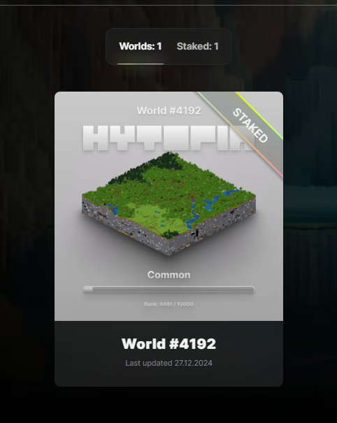
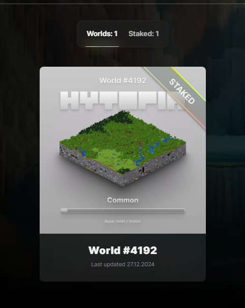

🧬 Experiment X: The Mutant Chronicles
Deep from the Narrrf Labs, a genetic experiment gave rise to the legends. Dive into the visuals and meet the freaks born from cheese, time, and a sprinkle of chaos.
_small.png) 

🧠What Are You Seeing?
These scenes are early visual experiments — testing future mechanics for terrain, plot, character integrations and gamified lore drops. The Narrrfverse is mutating rapidly.
🧠Experiment Log
- 🧪 Carusel1 (1–5).png rendered from GEN1 models + cheese terrain simulation
- 🨠Style: Mix of AI cartooning, matte texture blending, and experimental gradients
- ğŸ Characters: Based on core Narrrf avatars with mutated expressions and lore themes
- 🌠Worldbuilding: Hytopia-inspired alt zones (mountains, desert, labs)
- 🏗️ Added:
hytopia-world-4192.png— our land, staked, living in the lab now